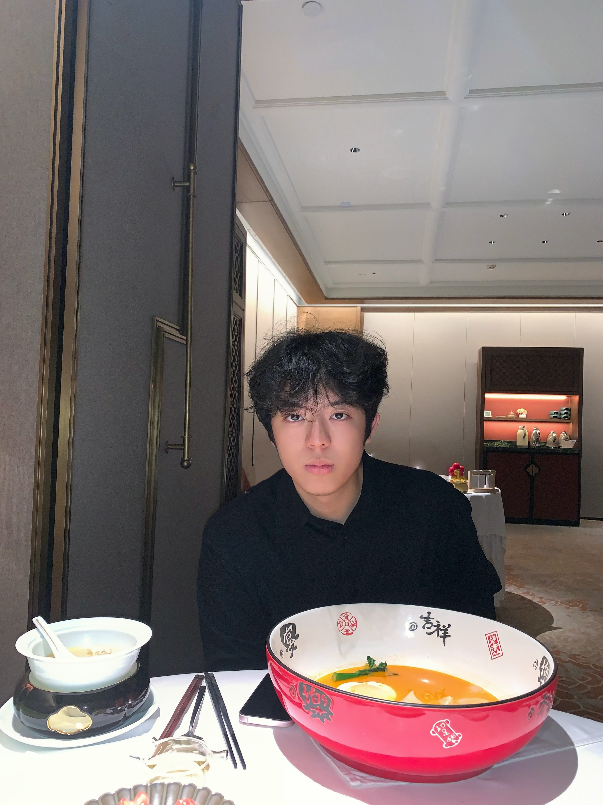
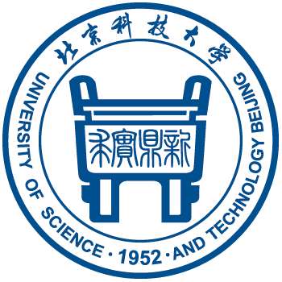
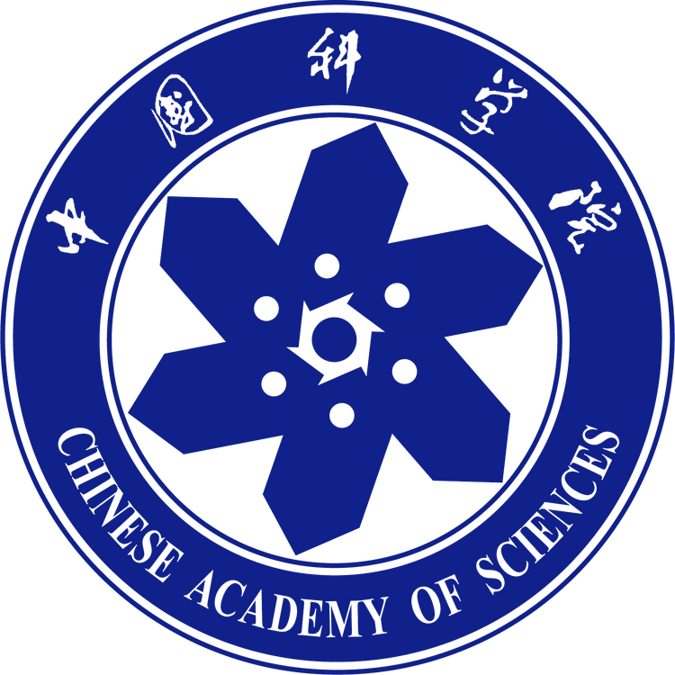
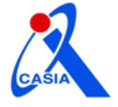

Xiangnan Wu 吴祥楠
Undergraduate @ USTB · Incoming PhD @ UCAS & CASIA
I am an undergraduate (2022–2026) at

I'm an incoming PhD student at
 
Currently conducting Vision-Language Action Model(VLA) pre-training and post-training research at
 Agibot Research.
Agibot Research.
Education & Background
PhD in Artificial Intelligence
Supervised by Prof. Yan Huang and Prof. Liang Wang. Research focus: Multimodal Learning and Robot Manipulation.
B.E. in Automation Engineering
Rank 1 / 115. National Scholarship ×2. School of Automation and Electrical Engineering.
Experience
Research Intern
Agibot Research
Feb. 2026 – Present
Research Intern · Visual Computing Group
Multimodal Agent research in the Visual Computing Group.
Research Intern
Recent News
- Nov. 2025 BridgeVLA is accepted to NeurIPS 2025! 🔥 New
Publications
Conference Papers
-
BridgeVLA: Input-Output Alignment for Efficient 3D Manipulation Learning with Vision-Language ModelsNeurIPS 2025 2025
Awards & Honors
Scholarships & Honors
-
National ScholarshipMinistry of Education, China2025
-
National ScholarshipMinistry of Education, China2024
-
Beijing "San Hao" StudentBeijing Municipal Education Commission2024
Compititions
-
Second PrizeNational Undergraduate Electronic Design Contest2024
-
Second PrizeNational Undergraduate Mathematical Contest in Modeling2024